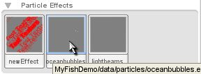
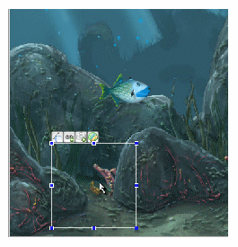
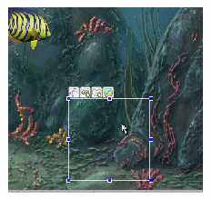
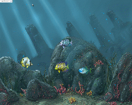
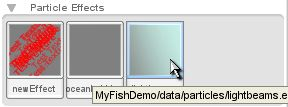
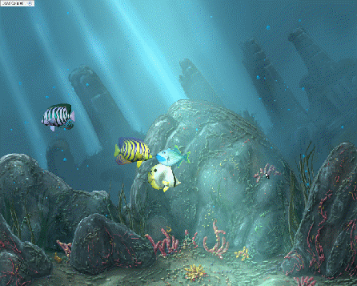

Torque
2D - Fish Demo Tutorial - Part 10
10.
Adding Particle Effects
10.1 Adding
bubble particles
Our final step is to add a
couple of particle effects. We have a bubble, and a light beam particle effect.
Adding these will really enhance the look of our fish demo. In your right panel
make sure that the Create tab is selected. Scroll down and click the Particle
Effects label. It's hard to tell what the two particle effects are,
since neither of them are meant to be highly visible. They are fairly subtle
effects. The first one is for creating new effects, the second one is the
bubble effect and the third one is the light beam effect. Drag and drop the
second effect, oceanbubbles.eff (as shown in Figure 10.1.1) to
the lower left of your level, between two of the rocks (as shown in Figure
10.1.2).
|

Figure 10.1.1
|
|

Figure 10.1.2
|
If you wait a moment after you drop the
bubble particle effect, you will see bubbles floating upward. Drag a second
bubble particle effect, and this time drop it in the bottom right of your level
between some other rocks (as shown in Figure 10.1.3).

Figure 10.1.3
Now save your level and click the Play
Level button. After a little bit of time, bubbles start to emit from the
particle effects we placed! (as shown in Figure 10.1.4)

Figure 10.1.4
10.2
Adding light beam particles
Our final particle effect to
add, is the light beam particle effect. The light beam effect is the third
particle effect in the object library. Drag and drop the light beam particle
effect (as shown in Figure 10.2.1) into the center of your level. After
a moment you should see the light beams appear. Adjust the position of the
particle effect object until the light beam fits your level correctly. Press
the play button and watch the light show! (as shown in Figure 10.2.2)
|

Figure 10.2.1
|
|

Figure 10.2.2
|